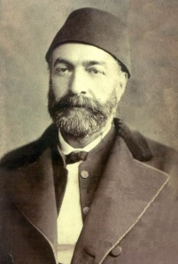

Ziya Paþa (1825-1880)

Tanzimat Devri'nin önde gelen þairlerinden biridir. Asýl adý Abdülhamid Ziyaüddin'dir. Kaleme aldýðý bazý þiirleri kendisine çok büyük þöhret kazandýrmýþtýr. Bazý beyitleri kolay ve sade göründüðü halde bulunup söylenmesi, taklit edilmesi zor ve "sehli mümteni" olarak addedilen sözler arasýnda yer almýþtýr. Özellikle sadrazam Ali Paþa aleyhindeki yazý ve faaliyetlerinden ötürü uzun süre Ýstanbul dýþýnda yaþamak zorunda kalmýþ ve muhtelif yerlere sürülmüþtür. Yeni Osmanlýlar hareketine katýldýktan sonra Namýk Kemal ile birlikte Londra'da Hürriyet Gazetesi'ni yayýmlamýþtýr. Fikirlerindeki zikzaklar ve bazý aþýrýlýklarý, yakýn arkadaþý Namýk Kemal olmak üzere, bir çok kiþi ile arasýnýn açýlmasýna sebep olmuþtur. Risâle-i Nur'da iki yerde ismi zikredilirken ünlü beyitlerinden birisine yer verilmiþtir.Ziya Paþa, 1825 (bazý kaynaklarda 1829) yýlýnda Ýstanbul'da, Galata Gümrüðü'nde kâtiplik yapan Erzurumlu Feridüddin Efendinin oðlu olarak dünyaya geldi. Tahsil hayatýna, Ýstanbul-Süleymaniye'deki Edebiyat mektebinde baþladý. Burayý bitirdikten sonra Bayezit Rüþtiyesine devam etti. Bu arada Arapça ve Farsça eðitimini alarak bu dilleri öðrendi. Þiire merakýndan ötürü eline geçen divanlarý okumaya baþladý. Erken yaþlarda divan þiirleri yazmaya baþladý. Ayný zamanda Aþýk Garip, Aþýk Kerem ve Aþýk Ömer gibi halk þairlerinin eserlerini de okudu.
Ziya Paþa, Sadaret Mektubi Kalemi'ndeki memurluðuyla iþ hayatýna atýldý. Bu memurluðunu 1855 yýlýna kadar sürdürdü. Bu tarihte Mustafa Reþit Paþa'nýn yardýmýyla Saray'da üçüncü kâtipliðe atanmak suretiyle önemli bir basamak kat etti. Kâtipliði sýrasýnda Fransýzca öðrenmeye aðýrlýk verdi ve bazý eserleri Türkçe'ye tercüme etti. Bu faaliyeti, hayatýnýn sonraki dönemlerine önemli katkýlar saðladý. Saraydaki çalýþmasý Âli Paþa'nýn Sadrazamlýðýna kadar sürdü. Âli Paþa ile geçinemediðinden Saray'dan uzaklaþtýrýldý. Bu amaçla Zaptiye Müsteþarlýðý'na tayin edildi. Ardýndan da Mutasarrýflýk vazifesiyle Kýbrýs'a tayin edilmek suretiyle Ýstanbul'dan uzaklaþtýrýldý.
Meclis-i Vala üyeliðiyle Ýstanbul'a dönen Ziya Paþa, Amasya Mutasarrýflýðýna atanmasýyla tekrar Ýstanbul'dan ayrýlmak zorunda kaldý. Akabinde de Canik Mutasarrýflýðýnda bulundu. Meþrutiyet idaresinin kurulmasýný saðlamak amacýyla yola çýkan Yeni Osmanlýlar Cemiyeti'ne girdi. Ýdareyle anlaþmazlýklarýndan ötürü Namýk Kemal ile birlikte Paris'e kaçtý (1867). Ýkili bir süre sonra Londra'ya geçerek burada Hürriyet Gazetesi'ni çýkardý. Bir süre Cenevre'de de yaþayan Ziya Paþa, Âli Paþa'nýn vefat etmesi üzerine Ýstanbul'a döndü.
Sultan Abdülaziz'in tahttan indirilmesinden sonra, V. Murad döneminde Maarif Müsteþarlýðýna getirildi. Sultan Abdülhamid'in ilk yýllarýnda Namýk Kemal ile birlikte Kanun-i Esasi Encümenliði'nde bulundu. Osmanlý Rus Savaþýnýn (93 Harbi) çýkmasý ve Meclis'in tatil edilmesinden sonra vezirlik rütbesiyle Suriye (1878), yaklaþýk üç buçuk ay sonra da Konya valiliðine tayin edildi. Son olarak Adana Valiliðine atandý ve 1880 yýlýnda burada vefat etti. Cenazesi Adana'da defnedildi.
Þiirleriyle önemli bir þöhrete sahip olan ve çok sayýdaki kiþinin takdirini kazanan Ziya Paþa, birbirine tezat ileri sürdüðü fikirleriyle de çok sert eleþtirilere muhatap olmuþtur. Tanzimat'la birlikte yeni dönemin önemli þairlerinden biri olan Ziya Paþa, 1868 yýlýnda kaleme aldýðý "Þiir ve Ýnþa" adlý makalesi ile Divan Edebiyatý ve þairlerini sert bir þekilde tenkit etti. Bilhassa Batý'nýn etkisiyle yaptýðý ileri sürülen fikri deðerlendirmesinde, Divan þairlerinin þiirlerini Türk þiiri olarak görmediðini ifade etti. Divan Edebiyatýnýn Ýran Edebiyatýnýn taklidinden ibaret olduðunu ileri sürerek çok aðýr iddialarda bulundu. Hürriyet Gazetesi'nde yayýnladýðý bu makalesinden sonra, baþta yakýn arkadaþý Namýk Kemal olmak üzere, çok sayýdaki eleþtiriye muhatap oldu. (Mustafa Canelli, Ziya Paþa, YAY., Ýstanbul 1986, s. 24-25; Yaþamlarý ve Yapýtlarýyla Osmanlýlar Ansiklopedisi, YKY., II. C., Ýstanbul 1999, s. 702; Yeni Rehber Ansiklopedisi, TGY., 20. C., s. 362.)
1868 yýlýnda Divan þiirini Ýran edebiyatýnýn taklidinden ibaret gören Ziya Paþa, 6-7 yýl sonra kaleme aldýðý manzum eseri "Harabat"ta önceki fikirlerini tekzip etti. Bu eserinde Divan þairlerini yüceltti. Bu eseriyle Divan Edebiyatý geleneðinden kopmadýðýný gösterdiði gibi güzel bir örneðini de vücuda getirmiþ oldu. Divan Edebiyatýna baðlý kalmakla birlikte; adalet, terakki, hak ve özgürlükler gibi siyasi konularý da iþleyerek fikirlerini dile getirdi. Ancak, tutarsýzlýk ve fikir zikzaklarý, þöhretini gölgeledi.
Risale-i Nur'da ismi zikredilen Ziya Paþa'nýn, baþkalarýna akýl verip üstünlük taslayan ve kendilerini görmeyenleri eleþtirdiði, güzel bir beytine yer verilmektedir: (Tarihçe-i Hayat, s. 18).
Âyinesi iþtir kiþinin lâfa bakýlmaz
Þahsýn görünür rütbe-i aklý eserinde.
Ziya Paþa, kendisiyle tezada düþme pahasýna da olsa fikirlerini açýk yüreklilikle ifade eden ender insanlardan biridir. Edebiyatýn yenileþtirilmesi uðruna eskiyi inkâr, yeni maceralar, manevi deðerleri bir çýrpýda yok etme gibi acý tecrübelerden sonra; eskinin büsbütün yok edilemeyeceðini görüp, tekrar saðduyunun hakim olduðunu gösteren simalardandýr. Bu açýdan Batýlýlaþma hareketlerinin bazý yanlýþlýklarýný gördükten sonra körü körüne yapýlan taklitçiliði tenkit etti: "Milliyeti nisyan ederek her iþimizde / Efkar-ý Frenge tebaiyyet yeni çýktý." ifadelerine yer verdi. Bediüzzaman da Batý taklitçilerini tenkit ederken Ziya Paþa'yý bunlarýn dýþýnda tutmakta ve muhatabýn Ziya Paþa olmadýðýný belirtmektedir. (Sözler, s. 189)
Eserleri
Ziya Paþa, kolay ve sade göründüðü halde bulunup söylenmesi, taklit edilmesi zor olan bir çok beyti kaleme almýþtýr. Bazý meþhur beyitleri yýllarca dilden dile dolaþmýþtýr ve þöhret kazanmasýna vesile olmuþtur; "En ummadýðýn keþf eder esrar-ý derunun / Sen herkesi kör, alemi sersem mi sanýrsýn"; "Nush ile uslanmayaný etmeli tekdir / Tekdir ile uslanmayanýn hakký kötektir"; "Ýnsana sadakat yakýþýr görse de ikrah / Yardýmcýsýdýr doðrularýn hazreti Allah"; "Ýncinmemek istersen eðer mülk-i fenada / Bir kimseyi incitmemeðe hasr-ý meram et" bunlardan bazýlarýdýr.
Eserlerinden önemli bir tanesi Eþ'ar-ý Ziya'dýr. Bu eser vefatýndan sonra damadý Hamdi Paþa tarafýndan, bütün þiirleri bir araya getirilmek suretiyle yayýmlanmýþtýr. Eser, daha sonra Süleyman Nazif tarafýndan tekrar gözden geçirilmiþ, bazý düzeltme ve ilavelerden sonra Külliyat-ý Ziya adýyla yeniden basýlmýþtýr.
Zafername'si mizah edebiyatýnýn önemli eserleri arasýnda yer almaktadýr. Nesir-nazým karýþýmý hiciv eseridir.
Üç cilt halinde kaleme alýnan Harabat adlý eseri Arapça, Farsça ve Türkçe þiirlerin antolojisi mahiyetindedir. Eski geleneðin güzel bir örneðini teþkil etmektedir. Bunlarýn dýþýnda birkaç eser daha kaleme almýþtýr.
Ziya Paþa, bazý önemli eserleri de Türkçe'ye tercüme etmek suretiyle dilimize kazandýrmýþtýr. Endülüs Tarihi, Emil, Tartuffe, Engizisyon Tarihi ünlü eserlerden yaptýðý tercümeleridir.